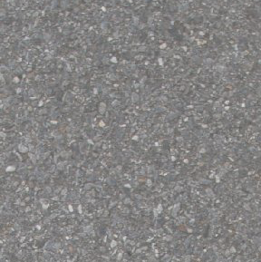

Finde den Weg zum See
Programmiere den Roboter:
Der Roboter möchte schwimmen gehen. Auf dem Weg zum See darf er die Straße nicht verlassen.
Hinweis: Der Roboter erkennt alles, was nicht Straße  oder ist, als Hindernis.